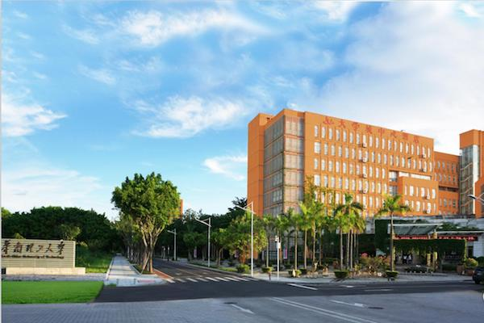
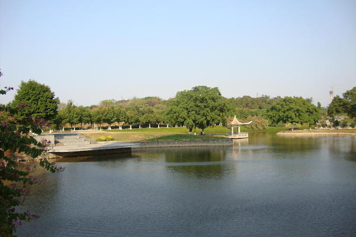
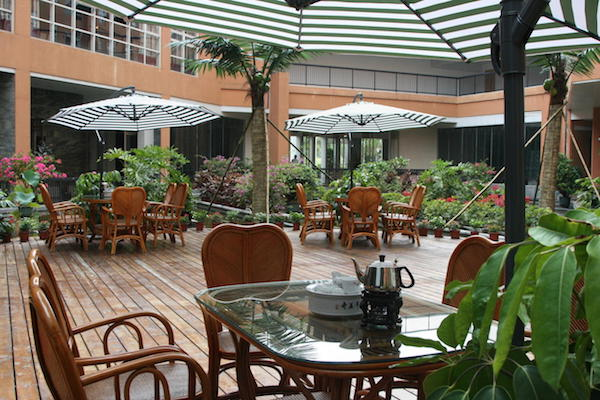
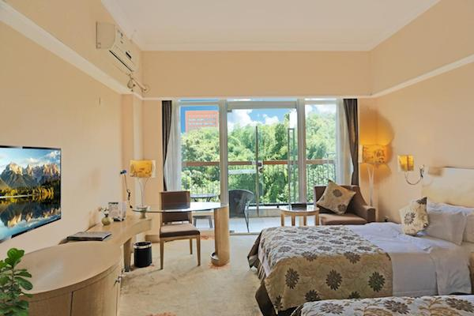

CSS 2019
11th International Symposium on Cyberspace Safety and Security
Guangzhou, China
| 1-3 Dec 2019
Conference Venue
CSS 2019 will be held at the University Town International Hotel (广州华工大学城中心酒店). The hotel is located in the Guangzhou Higher Education Mega Center (HEMC), also called Guangzhou University Town (广州大学城). HEMC is an area featured by higher education institutions, located on Xiaoguwei Island in Panyu District, Guangzhou, China.
Gallery




Location
Directions
By Taxi
The conference venue is located in the Guangzhou Higher Education Mega Center.
- 30 km to Guangzhou Railway Station
- 24 km to Guangzhou East Railway Station
- 28 km to Guangzhou South Railway Station
- 61.8 km to Guangzhou Baiyun International Airport
By Metro
The conference venue is 1.6 km (about 20 minutes walk) away from Guangzhou Metro Line 4 Higher Education Mega Center South Station (广州地铁四号线大学城南站).
| From Guangzhou Baiyun International Airport (广州白云国际机场): 66 Minutes, 3 Interchanges, 24 Stops, 11 CNY Get On: Airport North/South (机场北/机场南) Line 3 Interchange: Tiyu Xilu (体育西路) Line 3 Interchange: Kecun (客村) Line 8 Interchange: Wanshengwei (万胜围) Line 4 Get Off: Higher Education Mega Center South (大学城南) |
| From Guangzhou South Railway Station (广州南站) : 24 Minutes, 8 Stops, 5 CNY Get On: Guangzhou South Railway Station (广州南站) Line 7 Get Off: Higher Education Mega Center South (大学城南) |
| From Guangzhou Railway Station (广州站): 44 Minutes, 1 Interchange, 16 Stops, 7 CNY Get On: Guangzhou Railway Station (广州站) Line 5 Interchange: Chebeinan (车陂南) Line 4 Get Off: Higher Education Mega Center South (大学城南) |
| From Guangzhou East Railway Station (广州东站): 34 Minutes, 3 Interchanges, 13 Stops, 6 CNY Get On: Guangzhou East Railway Station (广州东站) Line 1 Interchange: Tiyu Xilu (体育西路) Line 3 Interchange: Kecun (客村) Line 8 Interchange: Wanshengwei (万胜围) Line 4 Get Off: Higher Education Mega Center South (大学城南) |